Prof. Dr. Kevin Buchin
TU Dortmund · Fakultät für Informatik
| Zeit | Programm |
|---|---|
| 14:15 | Einstieg: Wie sind Sie heute zur Uni gekommen? |
| 14:25 | Vorlesung: vom Stadtplan zum kürzesten Weg |
| 15:05 | Aktivität: Die beste Route für wen? |
| 15:40 | Pause |
| 15:55 | Vorlesung: schnell für alle, nach mehreren Kriterien |
| 16:35 | Ausprobieren in der Webdemo |
| 17:00 | Projektthemen zur Routenplanung |
| 17:20 | Ausblick; Ende um 17:30 |
Wählen Sie alles, was Sie heute genutzt haben.
Warum sind Sie so gekommen und nicht anders?
Was müsste sich ändern, damit Sie anders fahren?
„Bis 2030 den Zugang zu sicheren, bezahlbaren, zugänglichen und nachhaltigen Verkehrssystemen für alle ermöglichen (…), mit besonderem Augenmerk auf den Bedürfnissen von Menschen in prekären Situationen, Frauen, Kindern, Menschen mit Behinderungen und älteren Menschen.“
11 Städte · 13 Klima · 3 Gesundheit · 10 weniger Ungleichheiten · Zahlen: Umweltbundesamt 2026, MiD 2023, Destatis 2026
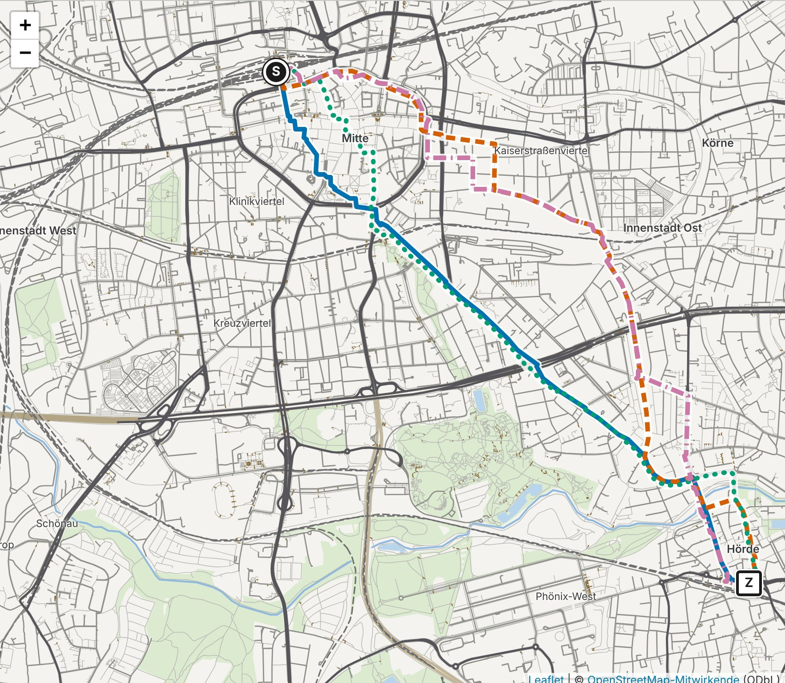
Hauptbahnhof → Phoenix-See
| Fuß | Rad | Rollst. | blind | |
|---|---|---|---|---|
| Länge (km) | 5,2 | 5,9 | 5,5 | 6,0 |
| Hauptstraße o. Radweg (m) | 825 | 18 | 315 | 159 |
| Treppen (m) | 50 | 0 | 0 | 21 |
| Querung ohne Ampel | 4 | 3 | 3 | 0 |
Gleicher Start, gleiches Ziel, vier Routen. Warum?
Webdemo, Reiter „Routen vergleichen“
Straßennetz als Graph \(G=(V,E)\): Kreuzungen sind Knoten, Wegstücke sind Kanten
Kantengewicht \(c(e)\ge0\): das Kriterium (Zeit, Länge, CO₂, Stress, Barrieren, …)
Gegeben \(s,t\in V\): Finde einen Weg von \(s\) nach \(t\) mit kleinstem Gesamtgewicht \(\sum_e c(e)\).
Dortmund mit dem Rad (OpenStreetMap, 09.11.2026):
Westeuropa: 18 Millionen Knoten, 42 Millionen Kanten
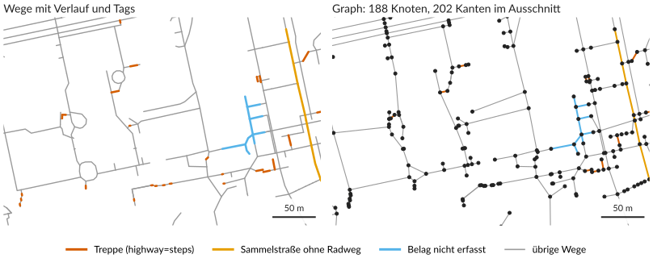
OpenStreetMap: Wege mit Tags, z. B. highway=steps, surface=sett, wheelchair=no, traffic_signals:sound=yes
Graph: Knoten an Kreuzungen und dort, wo sich Tags ändern; Kanten mit Länge und Merkmalen
Wie vollständig? Belag an 87 % der Wegstücke, wheelchair an 3 %, Steigung an 4 %
Kosten einer Kante = Zeit + \(\sum\) Gewicht × Merkmal; gesperrte Merkmale schließen eine Kante aus (Webdemo, personas.json)
| Radpendler*in | Rollstuhlfahrer*in | Blinde Person | |
|---|---|---|---|
| Tempo | 15 km/h | 1,0 m/s | 1,0 m/s |
| gesperrt | Treppen | Treppen, hohe Bordsteine, wheelchair=no |
– |
| Aufschläge | Hauptstraße ohne Radweg: +0,5 s je m schlechter Belag: +0,3 s je m je Höhenmeter: +6 s |
Querung ohne Ampel: +20 s schlechter Belag: +3 s je m je Höhenmeter: +20 s |
Querung ohne Ampel: +180 s Ampel ohne Signal: +60 s ohne Bodenindikatoren: +30 s |
Woher kommen diese Zahlen? Wer sollte sie festlegen?
Welcher Knoten ist als Nächstes dran?
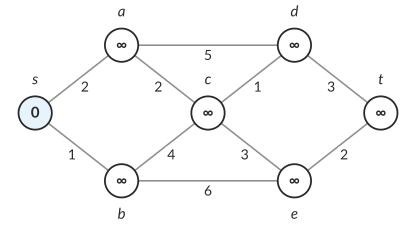
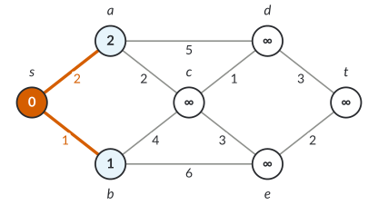
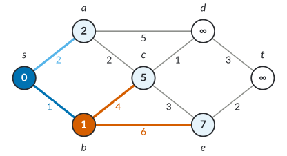
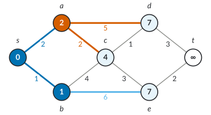
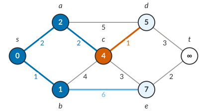
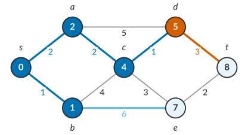
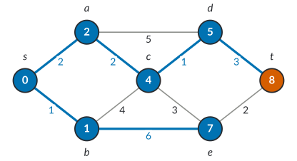
TU Dortmund → Phoenix-See: 27,4 min
▶ Animation: Wie wächst die Suche?
Der erste Knoten, den beide Suchen abarbeiten, liegt nicht unbedingt auf einem kürzesten Weg.
Wie viel schneller ist der bidirektionale Dijkstra als Dijkstra, ungefähr?
Schätzung \(h(v)\le\) Distanz von \(v\) nach \(t\), z. B. Luftlinie / Höchstgeschwindigkeit
Arbeite den Knoten mit kleinstem \(d(v)+h(v)\) ab
Landmarken (ALT): bessere Schätzungen aus vorberechneten Distanzen zu einigen Knoten
Warum darf \(h\) nie zu groß sein?
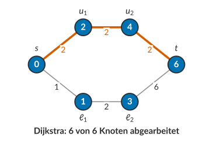
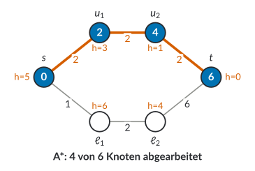
In Gruppen zu 4–5, je Gruppe eine Persona-Karte:
20 Minuten, dann je Persona eine Gruppe: drei Minuten
15 Minuten
Geisberger, Sanders, Schultes und Delling (2008); Grundlage vieler Routenplaner, z. B. OSRM und GraphHopper
| Verfahren | Idee | Preis |
|---|---|---|
| Arc-Flags | Karte in Regionen teilen; jede Kante merkt sich, zu welchen Zielregionen sie auf einem kürzesten Weg liegt | ein Bit je Kante und Region |
| Transit Node Routing (TNR) | Lange Wege verlassen die Umgebung von \(s\) über wenige Zugangsknoten; Distanzen zwischen allen Transitknoten als Tabelle | große Tabelle; kurze Wege extra |
| Hub Labels | Jeder Knoten speichert Hubs mit Distanzen; eine Anfrage schneidet zwei Listen | sehr schnell, viel Speicher |
| Mehrebenen-Partitionen (CRP) | Graph in Zellen teilen, Abkürzungen zwischen den Zellrändern; neue Gewichte schnell einrechnen | etwas langsamere Anfragen |
Je mehr vorberechnet und gespeichert wird, desto schneller die Anfrage. Wir sehen uns CH genauer an.
Überblick: Bast et al. (2016)
Kontrahiere \(v\); für jedes Paar von Nachbarn \(u,w\): Abkürzung \(u\!-\!w\) der Länge \(c(u,v)+c(v,w)\), außer ein ebenso kurzer Zeuge umgeht \(v\) (kleine, begrenzte Dijkstra-Suche ab \(u\))
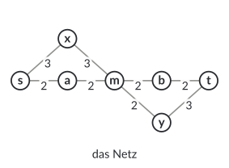
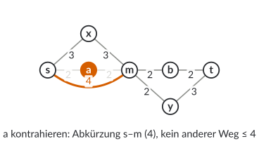
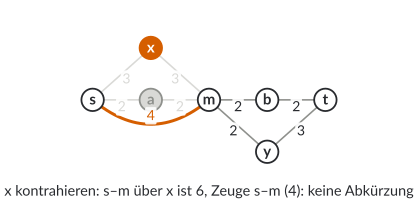
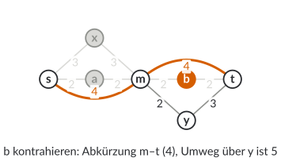
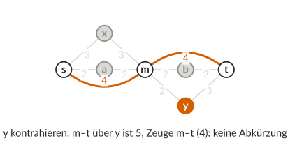
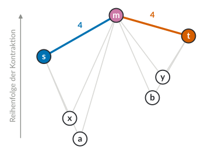
Warum bleiben die Suchen nicht in der Nähe der Route?
| Dortmund mit dem Rad | Vorberechnung | Knoten: TU → Phoenix-See | Mittel über 300 Anfragen |
|---|---|---|---|
| Dijkstra | keine | 62.880 | 54.587 |
| bidirektional | keine | 33.547 | 34.990 |
| A*, Luftlinie | keine | 8.725 | 13.775 |
| ALT, 8 Landmarken | 16 Dijkstra-Läufe | 6.123 | 4.896 |
| Kontraktionshierarchie | 185.295 Abkürzungen, etwa 9 s | 239 | 249 |
Westeuropa (18 Millionen Knoten), je Anfrage: Dijkstra 1,6 s, anpassbare CH 0,41 ms
Bast et al. (2016); Dibbelt, Strasser, Wagner (2014); Dortmund: Webdemo
Alles für jedes Profil neu berechnen?
Dibbelt, Strasser, Wagner (2014, 2016)
Route \(P\) dominiert Route \(Q\): in beiden Kriterien mindestens so gut, in einem besser
Pareto-optimal: von keiner anderen Route dominiert
Gewichtete Summe: \(\lambda\cdot\text{Zeit}+(1-\lambda)\cdot\text{Meter Hauptstraße}\), für ein festes \(\lambda\)
| Route | Zeit | Hauptstraße ohne Radweg |
|---|---|---|
| A | 22 min | 3.300 m |
| B | 23 min | 200 m |
| C | 24 min | 400 m |
| D | 25 min | 0 m |
Welche Route ist dominiert?
Radpendler*in, Hauptbahnhof → Phoenix-See, Kriterien Zeit und Meter auf Hauptstraßen ohne Radweg
Wie viele Pareto-optimale Routen gibt es?
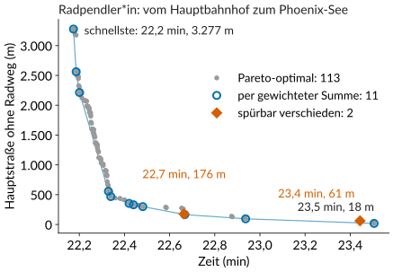
Warum findet die gewichtete Summe die anderen nicht?
Webdemo, Reiter „Pareto-Front“
Welche dieser Grenzen ist Ihnen bei Ihrer Persona begegnet?
In denselben Gruppen, 20 Minuten; notieren Sie eine Überraschung.
| Thema | Worum es geht | |
|---|---|---|
| 1 | Sicher mit dem Rad ans Ziel | Was macht eine Radroute gut? |
| 2 | Ohne Stufen ans Ziel | Routen für Rollstuhl, Rollator, Kinderwagen |
| 3 | Sicher über die Straße | Routen für blinde und sehbehinderte Menschen |
| 4 | Was wäre, wenn …? Eine bessere Verbindung zum Campus | Fahrplan-Szenarien entwerfen und durchrechnen |
| 5 | Wer steigt wo aus? Mitfahren bis zum Bahnhof | Auto und Fahrplan: Mitfahrende an Bahnhöfen absetzen |
Webdemo, Wegenetz (OSMnx), Nahverkehr (MOTIS, GTFS), Daten, Beispiel-Notebooks
Zu jedem Thema gibt es einen Steckbrief mit Leitfrage; eigene Ideen sind willkommen.
Fragen zu den Themen: jetzt, nach der Sitzung oder im Moodle-Forum
Zum Nachlesen
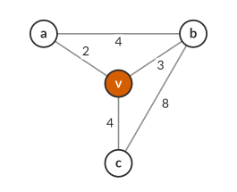
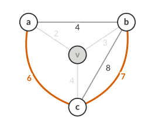
Welche Abkürzungen braucht die Kontraktion von \(v\)?
Prüfen Sie alle drei Paare von Nachbarn.
Wie viele Kanten hat der Graph vorher und nachher?
Für alle \(s,t\) gibt es einen kürzesten Weg, der in der Reihenfolge erst aufwärts und dann abwärts führt (mit Abkürzungen).
Beweisidee: Nimm das tiefste Tal \(v\) eines kürzesten Weges. Als \(v\) kontrahiert wurde, gab es \(u\) und \(w\) noch: Eine Abkürzung \(u\)–\(w\) oder ein Zeuge über höhere Knoten ist höchstens so lang. Ersetzen, wiederholen.
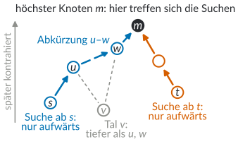